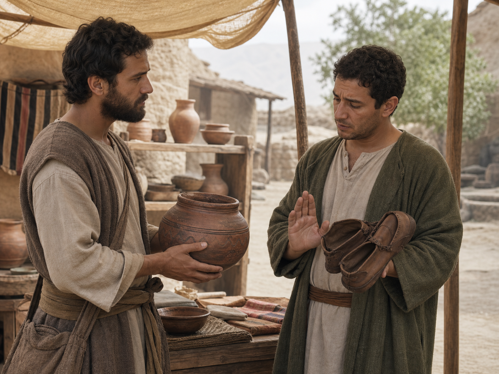
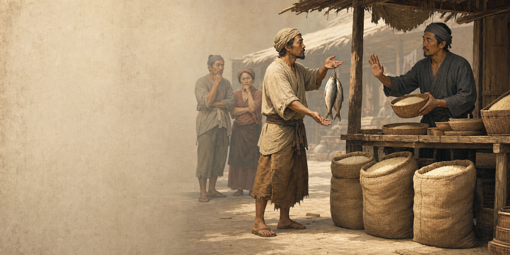
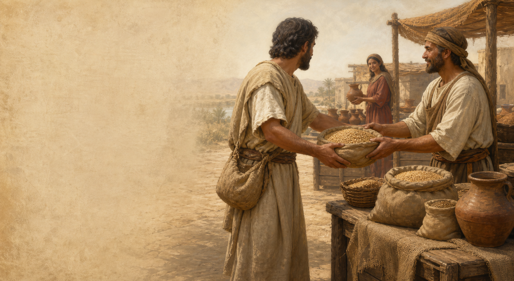

เปลี่ยนคำถามลอย ๆ ให้กลายเป็นภาพปัญหาที่จับต้องได้ทันที คือความไม่สมดุลของมูลค่าและการแบ่งหน่วยที่ลำบาก
ทำให้ผู้เรียนเห็นปัญหาพื้นฐานของการแลกของโดยตรงก่อนจะไปถึงคำอธิบายว่าทำไมสังคมต้องมีเงิน
สมมติว่าเราไม่มีเงินใช้เลย ทุกอย่างต้องกลับไปสู่การเอาของไปแลกของโดยตรง ปัญหาจะไม่ได้อยู่แค่ว่าเรามีของหรือไม่มีของ แต่คือของแต่ละอย่างมีมูลค่าไม่เท่ากันตั้งแต่ต้น
บางอย่างแบ่งย่อยไม่ได้โดยไม่ทำลายประโยชน์ของมัน เพราะฉะนั้นโลกที่ไม่มีเงินไม่ได้แปลว่าแลกกันไม่ได้ แต่แปลว่าแลกกันได้ยากมาก

ซูมเข้าไปที่ตัวอย่างง่ายที่สุดของ barter trade เพื่อให้ข้อจำกัดดูเป็นเรื่องสามัญ ไม่ใช่แนวคิดนามธรรม
เปลี่ยนปัญหาเชิงหลักการให้เป็นภาพตลาดที่ผู้เรียนเห็นและจินตนาการได้ทันที
สมมติเรามีปลาและอยากได้ข้าว ถ้าอีกคนมีข้าวแต่ไม่ได้อยากได้ปลา การแลกก็เกิดไม่ได้
ตรงนี้ทำให้เห็นว่าปัญหาของ barter trade ไม่ใช่แค่ขาดของ แต่คือขาดระบบที่ช่วยให้ความต้องการที่ไม่ตรงกันยังแลกเปลี่ยนกันได้
เพิ่มข้อจำกัดอีกชั้นของ barter trade คือแม้ความต้องการจะตรงกัน การแบ่งหน่วยของมูลค่าก็อาจยังทำให้แลกกันไม่ได้
ทำให้ผู้เรียนเห็นว่าการไม่มีหน่วยกลางทำให้ของมูลค่าสูงบางอย่างแทบใช้แลกหน่วยเล็กไม่ได้เลย
สมมติว่าเรามีวัวทั้งตัว แล้วเราอยากได้ปลา อีกฝ่ายอาจอยากได้วัวก็จริง แต่ไม่ได้อยากได้วัวทั้งตัว หรือไม่ได้พร้อมรับภาระดูแลมัน
นี่คือเหตุผลว่าทำไมเรื่องการแบ่งหน่วยของมูลค่าจึงสำคัญมากสำหรับเงินที่ดี

พาผู้เรียนข้ามจากการเห็นปัญหา ไปสู่การเห็นทางออกที่มนุษย์ค่อย ๆ ค้นพบเองในทางปฏิบัติ
ทำให้ผู้เรียนเห็นกำเนิดของเงินในฐานะสินค้าที่ถูกยอมรับร่วมกัน ไม่ใช่สิ่งที่โผล่มาเป็นเหรียญหรือธนบัตรทันที
เมื่อคนในสังคมต้องการของบางอย่างร่วมกันมากพอ บางคนก็เริ่มรับของสิ่งนั้นไว้ก่อน แม้ตัวเองไม่ได้อยากบริโภคมันโดยตรง
นี่คือจุดเริ่มต้นของการแลกเปลี่ยนทางอ้อม และเป็นต้นกำเนิดของสิ่งที่เราเรียกว่าเงิน